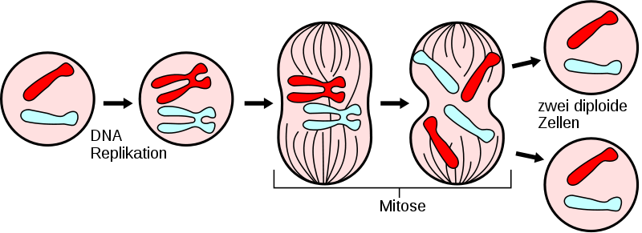

Krebs
Bei der Zellteilung spielen so genannte Motor-Proteine eine wichtige Rolle.
Sie sorgen für die Verteilung der DNA auf die beiden neuen Tochterzellen während der Zellteilung.

Wie verhindert nun Docetaxel die Zellteilung?
Docetaxel ist natürlich nicht platt, sondern hat eine räumliche Struktur.
Es passt perfekt in den "Tankdeckel" des Motor-Proteins und verhindert damit die Verteilung und damit eine erfolgreiche Zellteilung.
Natürlich hat ein Molekül keinen Tankdeckel, gemeint ist hier ein spezieller für die Funktion des Moleküls wichtiger Bereich
des Motor-Proteins.
In der Wissenschaft nennt man solch ein perfektes Zusammenpassen von einem Wirkstoff in die Bindetasche eines Moleküls
das Schlüssel-Schloss-Prinzip. Der Wirkstoff ist dabei der Schlüssel, der "Tankdeckel" das Schloss.
Siehst Du, wie gut Docetaxel in die Bindetasche des Motor-Proteins passt?
Mit Hilfe der Maus kannst Du in der Struktur umherwandern.
zurück